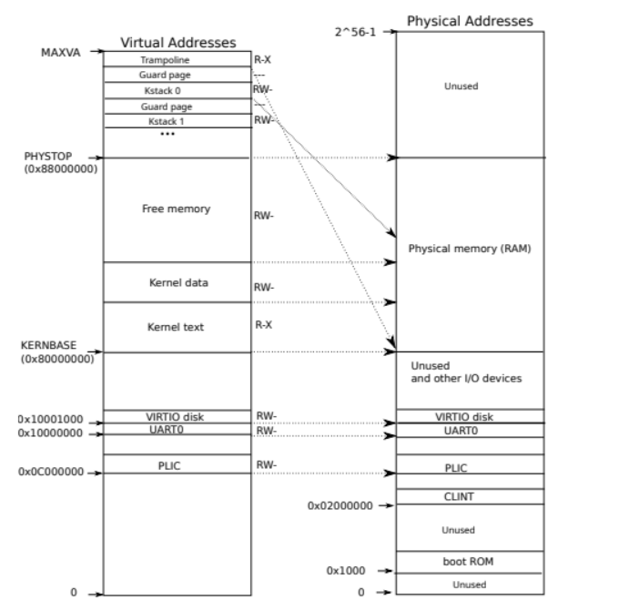
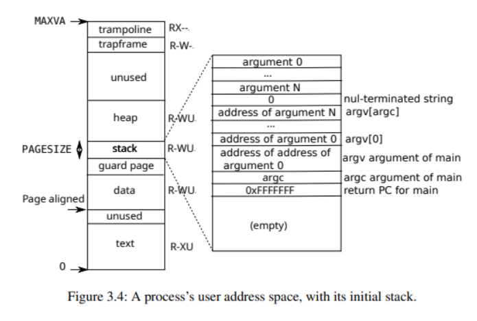

简介
本项目为从零开始使用 Rust 语言重新实现 xv6。
项目进度
-
移植 RustSBI
- 使用 RustSBI 启动内核
-
锁
- 自旋锁
- 睡眠锁
-
存储管理
- 物理页分配
- Rust 全局分配器
- 虚拟存储
-
进程管理
- 从 ELF 文件创建进程
- 进程调度
-
陷入处理
- 系统调用 (部分)
功能演示
目前基于 RustSBI 的 console_getchar 接口，实现了系统调用 read。并实现了一个用户程序 sh，其功能是接受用户输入的一行字符串，然后重新输出这个字符串。
[rustsbi] RustSBI version 0.3.0-alpha.4, adapting to RISC-V SBI v1.0.0
.______ __ __ _______.___________. _______..______ __
| _ \ | | | | / | | / || _ \ | |
| |_) | | | | | | (----`---| |----`| (----`| |_) || |
| / | | | | \ \ | | \ \ | _ < | |
| |\ \----.| `--' |.----) | | | .----) | | |_) || |
| _| `._____| \______/ |_______/ |__| |_______/ |______/ |__|
[rustsbi] Implementation : RustSBI-QEMU Version 0.2.0-alpha.2
[rustsbi] Platform Name : riscv-virtio,qemu
[rustsbi] Platform SMP : 3
[rustsbi] Platform Memory : 0x80000000..0x88000000
[rustsbi] Boot HART : 0
[rustsbi] Device Tree Region : 0x87000000..0x8700117a
[rustsbi] Firmware Address : 0x80000000
[rustsbi] Supervisor Address : 0x80200000
[rustsbi] pmp01: 0x00000000..0x80000000 (-wr)
[rustsbi] pmp02: 0x80000000..0x80200000 (---)
[rustsbi] pmp03: 0x80200000..0x88000000 (xwr)
[rustsbi] pmp04: 0x88000000..0x00000000 (-wr)
__ ____ ____ ____ _ _ ____ _____
\ \/ /\ \ / / /_ | _ \| | | / ___|_ _|
\ / \ \ / / '_ \ _____| |_) | | | \___ \ | |
/ \ \ V /| (_) |_____| _ <| |_| |___) || |
/_/\_\ \_/ \___/ |_| \_\\___/|____/ |_|
where there is a shell, there is a way
xv6-rust kernel is booting...
$ hello world
hello world
$ shell
shell
$ xv6-rust
xv6-rust
$
视频演示
环境配置
C 环境
sudo apt-get install git build-essential gdb-multiarch qemu-system-misc gcc-riscv64-linux-gnu binutils-riscv64-linux-gnu
Rust 环境
curl https://sh.rustup.rs -sSf | sh
Rust nightly
rustup install nightly
rustup default nightly
更改 cargo 镜像地址
将 ~/.cargo/config 里的内容改为如下：
[source.crates-io]
registry = "https://github.com/rust-lang/crates.io-index"
replace-with = 'ustc'
[source.ustc]
registry = "git://mirrors.ustc.edu.cn/crates.io-index"
Rust 相关软件包
rustup target add riscv64gc-unknown-none-elf
cargo install cargo-binutils
rustup component add llvm-tools-preview
rustup component add rust-src
QEMU 环境
默认使用的 qemu 版本为 7.0.0
下载源码包并手动编译
# 安装编译所需的依赖包
sudo apt install autoconf automake autotools-dev curl libmpc-dev libmpfr-dev libgmp-dev \
gawk build-essential bison flex texinfo gperf libtool patchutils bc \
zlib1g-dev libexpat-dev pkg-config libglib2.0-dev libpixman-1-dev libsdl2-dev \
git tmux python3 python3-pip ninja-build
# 下载源码包
wget https://download.qemu.org/qemu-7.0.0.tar.xz
# 解压
tar xvJf qemu-7.0.0.tar.xz
# 编译安装并配置 RISC-V 支持
cd qemu-7.0.0
./configure --target-list=riscv64-softmmu,riscv64-linux-user # 如果要支持图形界面，可添加 " --enable-sdl" 参数
make -j$(nproc)
安装
sudo make install
gdb
使用 gdb-multiarch 即可
sudo apt-get install gdb-multiarch
代码结构
.
├── bootloader
│ └── rustsbi-qemu.bin
├── kernel
│ ├── build.rs
│ ├── Cargo.toml
│ ├── Makefile
│ └── src
│ ├── allocator
│ │ └── mod.rs
│ ├── console.rs
│ ├── driver
│ │ ├── mod.rs
│ │ └── virtio_disk.rs
│ ├── entry.S
│ ├── exec
│ │ ├── apps.rs
│ │ ├── elf.rs
│ │ └── mod.rs
│ ├── fs
│ │ ├── buf.rs
│ │ ├── file.rs
│ │ ├── inode.rs
│ │ ├── log.rs
│ │ ├── mod.rs
│ │ └── pipe.rs
│ ├── kernel.ld
│ ├── lang_items.rs
│ ├── lock
│ │ ├── mod.rs
│ │ ├── sleeplock.rs
│ │ └── spinlock.rs
│ ├── logo
│ │ ├── logo
│ │ └── mod.rs
│ ├── main.rs
│ ├── memory
│ │ ├── kalloc.rs
│ │ ├── kvm.rs
│ │ ├── memlayout.rs
│ │ ├── mod.rs
│ │ ├── pagetable.rs
│ │ └── uvm.rs
│ ├── param.rs
│ ├── printf.rs
│ ├── process
│ │ ├── context.rs
│ │ ├── cpu.rs
│ │ ├── mod.rs
│ │ ├── proc.rs
│ │ └── switch.S
│ ├── riscv.rs
│ ├── sbi.rs
│ ├── string.rs
│ ├── sync
│ │ ├── mod.rs
│ │ └── upcell.rs
│ ├── syscall
│ │ ├── mod.rs
│ │ ├── sysfile.rs
│ │ └── sysproc.rs
│ └── trap
│ ├── kernelvec.S
│ ├── mod.rs
│ ├── plic.rs
│ ├── trampoline.S
│ └── trapframe.rs
├── Makefile
└── user
├── Cargo.toml
├── Makefile
└── src
├── bin
│ └── sh.rs
├── console.rs
├── lang_items.rs
├── lib.rs
├── syscall.rs
└── user.ld
并发控制
多线程容器
在 Rust 中对可变静态变量的访问是不安全的，直接使用会导致代码中很多 unsafe 块。所以我们需要一个具有内部可变性的容器，将静态变量包含起来，来实现对静态变量的安全访问。
实际上在 Rust 库中已经实现了类似的实现如 RefCell和UnSafeCell，RefCell 由于多个可变引用存在时会 panic，无法实现更加精细的并发控制，UnSafeCell 在多线程下是不安全的。
所以我们使用 UnSafeCell 封装成容器 UPCell ，并为其实现 trait Sync，就可以在多线程中访问，同时允许多个可变借用存在。其实现如下：
#![allow(unused)] fn main() { pub struct UPCell<T> { data: UnsafeCell<T>, } unsafe impl<T> Sync for UPCell<T> {} unsafe impl<T> Send for UPCell<T> {} impl<T> UPCell<T> { pub fn new(value: T) -> Self { Self { data: UnsafeCell::new(value), } } pub fn get(&self) -> *mut T { self.data.get() } pub fn get_mut(&self) -> &mut T { unsafe { &mut *self.data.get() } } } }
实际上这个容器在多线程下也是不安全的，因为它允许多个可变借用存在，但这也是我们的目的。所以对于容器内部结构体中的可能会发生数据竞争的变量，需要通过加锁来避免数据竞争。
通过组合使用 UPCell 和 自旋锁，可以提高程序的可并发性。
自旋锁
为了使锁的粒度尽量小，这里我们使用了和 xv6 同样风格的锁。
#![allow(unused)] fn main() { pub struct Spinlock { locked: AtomicBool, // 用于调试 name: &'static str, cpu: *mut Cpu, } }
我们使用 Rust 中的原子类型 AtomicBool 的两个原子方法compare_exchange 和 store 来保证锁的获取和释放操作是原子性的。同时通过 fence(Ordering::SeqCst) 设置内存屏障来保证 cpu 或编译器不会将这个屏障后的指令优化到前面执行。
#![allow(unused)] fn main() { pub fn acquire(&mut self) { push_off(); // 关中断，避免死锁 if self.holding() { panic!("acquire"); } while self .locked .compare_exchange(false, true, Ordering::Acquire, Ordering::Acquire) .is_err() {} // 自旋等待 fence(Ordering::SeqCst); self.cpu = mycpu(); } pub fn release(&mut self) { if !self.holding() { panic!("release"); } self.cpu = null_mut(); fence(Ordering::SeqCst); self.locked.store(false, Ordering::Release); pop_off(); } }
同时还应该注意到，在上述代码中，有两个额外的操作 push_off 和 pop_off。考虑当 aquire 或 release 时，如果发生中断，则可能会导致一个锁被多个 cpu 持有或者被多次释放，所以要保证获取锁和释放锁时中断处于关闭状态，并且还要在操作结束后恢复原来的中断状态，所以就有了如下的实现。
#![allow(unused)] fn main() { pub fn push_off() { let old = intr_get(); intr_off(); let mut mc = unsafe { &mut *mycpu() }; // 第一次 push_off，需要记录之前的中断开启状态 if mc.noff == 0 { mc.intena = old; } mc.noff += 1; } pub fn pop_off() { let mc: &mut Cpu = unsafe { &mut *mycpu() }; if intr_get() { panic!("pop_off - interruptible"); } if mc.noff < 1 { panic!("pop_off {}", mc.noff); } mc.noff -= 1; if mc.noff == 0 && mc.intena { intr_on(); } } }
睡眠锁
睡眠锁主要用于需要长时间处理的资源的互斥访问，如磁盘读写。当一个睡眠锁被一个进程持有之后，后续试图获取这个锁的进程会进入休眠状态，从而避免了自旋锁那样的忙等。
其实现如下：
#![allow(unused)] fn main() { pub struct Sleeplock { locked: bool, // 此锁是否被持有 lk: Spinlock, // 用于保护此锁的自旋锁 // 用于调试 name: &'static str, // 锁的名字 pid: usize, // 拥有锁的进程 } pub fn acquire(&mut self) { self.lk.acquire(); while self.locked { sleep(self as *mut Sleeplock, &mut self.lk); } self.locked = true; let p = unsafe { & *myproc()}; self.pid = p.pid; self.lk.release(); } pub fn release(&mut self) { self.lk.acquire(); self.locked = false; self.pid = 0; wakeup(self as *mut Sleeplock); self.lk.release(); } }
在实现睡眠锁时要注意两个问题：
- 避免唤醒丢失的问题
- 避免出现死锁
考虑下面一种情况：
- 现有一把睡眠锁 lk 被进程 A 持有，进程 B 尝试获取 lk 失败，所以会进入睡眠，在它即将进入睡眠状态之前，进程 A 释放了 lk，由于这个时候进程 B 还没有完全进入睡眠状态，所以进程 A 不会释放进程 B，在 B 彻底进入睡眠状态后就无人将它唤醒了，所以这种问题也就是唤醒丢失问题。
很容易发现上述问题是由于睡眠操作和唤醒操作的非互斥进行造成的，所以我们在 Sleeplock 中加入了一个 Spinlock 来保证 sleep() 和 wakeup() 的原子性。但这样也引入了另外一个问题。
- 当进程进入睡眠状态时，会带着持有的
lk一起进入睡眠，所以后续进程也就无法使用lk，从而导致死锁。
实际上在 sleep() 内部，会释放 lk 并通过另一把进程锁 p->lock 来接替 lk 的任务，并且 p->lock 是会自动释放的，这样就避免了死锁的产生。在 walkeup() 中的实现也是类似的。
所以我们巧妙地使用了两把 Spinlock 来实现了 Sleeplock。
存储管理
全局分配器
为了在内核中能够使用 String, Vec 等动态内存分配的容器，需要实现 global_allocator，为此我们直接使用的现有的 buddy_system_allocator 来实现。
#![allow(unused)] fn main() { #[global_allocator] static HEAP_ALLOCATOR: LockedHeap = LockedHeap::empty(); }
物理页分配
我们对空闲页面的管理方式和 xv6 相同，即链式管理。由于链表的所有结点信息都存储在空闲页面里面，所以这种管理方式的优点就是没有额外的内存开销。
在内核初始化时，会扫描所有的空闲物理页面，然后组成一个空闲页面链表。
#![allow(unused)] fn main() { struct Kmem { lock: Spinlock, freelist: *mut Run, } pub fn kinit() { KMEM.get_mut().freerange(ekernel as Addr, PHYSTOP); // println!("kinit success!"); } fn freerange(&mut self, pa_start: Addr, pa_end: Addr) { let mut pa = pgroundup(pa_start); while pa < pa_end - PGSIZE { self.kfree(pa); pa += PGSIZE; } } }
kalloc() 会从单向空闲页面链表的表头，找到一个可用的空闲页面，如果找到就返回这个地址，否则就会返回一个空指针。
kfree() 会回收一个地址为 pa 的物理页面。
#![allow(unused)] fn main() { fn kfree(&mut self, pa: Addr) { if pa % PGSIZE != 0 || pa < ekernel as Addr || pa >= PHYSTOP { panic!("kfree"); } // 填充垃圾数据避免垂悬引用 memset(pa as *mut u8, 1, PGSIZE); let pa = pa as *mut Run; self.lock.acquire(); unsafe { (*pa).next = self.freelist } self.freelist = pa; self.lock.release(); } fn kalloc(&mut self) -> Addr { let mut r: *mut Run = null_mut(); self.lock.acquire(); r = self.freelist; if r != null_mut() { unsafe { self.freelist = (*r).next } } self.lock.release(); if r != null_mut() { memset(r as *mut u8, 5, PGSIZE); } r as Addr } }
当然目前的这种单向链表管理方式也存在一些问题：
- 没必要在初始化时扫描所有内存，而仅需额外增加一个变量 next 表示下次分配的物理页面的地址，在释放页面时才逐步地建立起来空闲页面链表。
- 单向空闲页面链表会存在部分页面频繁使用，而部分页面几乎从不使用的情况，可以使用双向链表改进。
后续会对上述存在的问题进行改进。
虚拟存储
我们虚拟存储的实现基本与 xv6 保持一致。
对于内核地址空间，我们采用恒等映射的方式。

对于用户地址空间，我们将其映射到地址 0x0 处。

内核栈与用户栈
在实际运行测试过程发现一个页面大小的堆栈无法满足正常需求，有时在内核启动过程中会出现爆栈的情况，所以我们统一将内核的堆栈大小设置为 16 个页面，也就是 64K，而用户的堆栈大小设置为 4个页面，即 4K。
#![allow(unused)] fn main() { pub const KERNEL_STACK_SIZE: usize = 16 * PGSIZE; pub const USER_STACK_SIZE: usize = 4 * PGSIZE; }
进程管理
目前的进程结构的实现与 xv6 保持一致。
#![allow(unused)] fn main() { pub struct Proc { pub lock: Spinlock, // 当使用这些时必须持有 p->lock pub state: ProcState, // 进程状态 chan: *mut u8, // 如果非空，处于休眠态并等待睡眠锁 chan killed: bool, // 如果为 true，进程被杀死 xstate: isize, // 退出时的状态，会返回给正在等待的父进程 pub pid: usize, // 进程号 // 当使用这个域时必须持有 wait_lock parent: *mut Proc, // 父进程 // 这些是进程的私有属性，不必持有 p->lock pub kstack: Addr, // 内核栈的虚拟地址 pub sz: usize, // 进程占用内存大小 (单位: 字节) pub uvm: Uvm, // 进程页表 pub trapframe: *mut Trapframe, // 用于切换到内核时保存用户信息 context: Context, // swtch() 从这切换进程 ofile: [*mut File; NOFILE], // 打开的文件 cwd: *mut Inode, // 当前工作目录 pub name: String, // 进程名 } }
shell 程序
由于目前尚未实现文件系统，所以我们实现了一个简单的用户程序 sh 来测试进程相关的功能，并把 sh 编译得到的 elf 格式可执行文件硬链接进入内核的数据段，这样可以直接从内核加载用户程序并启动。
pub fn main() { ... exec_app("sh"); ... }
总结与期望
总结
目前 xv6 的主体部分，包括内存管理和进程管理，已经基本实现。
并且可以正常运行用户程序。
期望
- 继续完成后续的内核移植工作，主要为文件系统。
- 移植 xv6 的用户程序。
- 让代码风格更加
rusty。